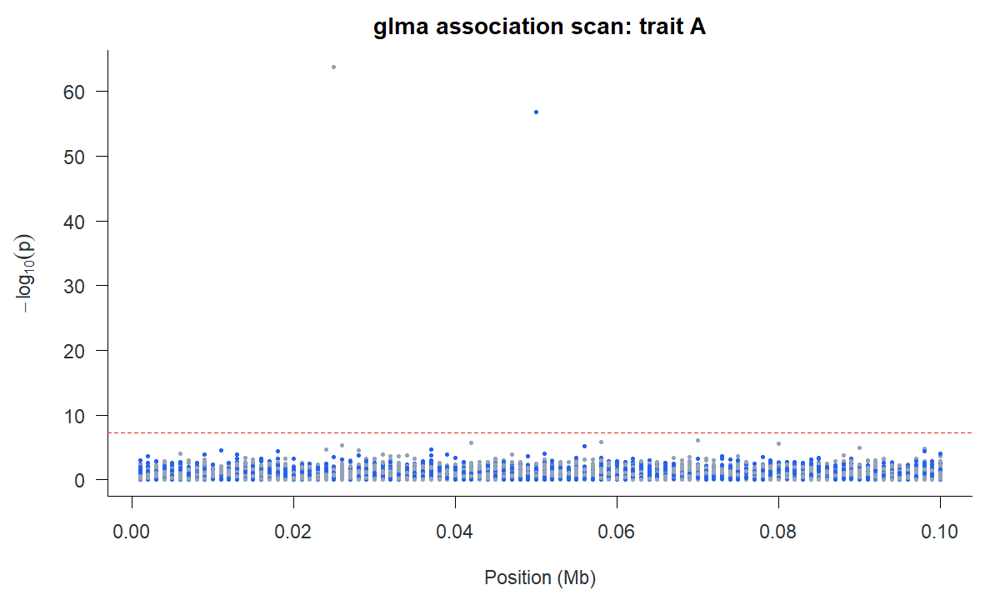

Association analysis with glma
glma scans individual-level genotypes in a Glist. It supports quantitative linear scans, conditional scans, binary logistic scans and two leave-one- chromosome-out (LOCO) background models. Its vegas() function then combines aligned marker evidence within named marker sets using reference LD. This page follows the shared simulation, where each of three traits has a separate 6,000-person GWAS cohort. First run the loading block in that overview to define prefix, Y, simulation, reference_Glist and gene_sets; the snippets below can then be run in order.
Scan the quantitative traits
The phenotype is named by individual ID, so glma() can match its rows to the selected Glist sample order. A named matrix can scan several traits in the same cohort; this simulation instead uses disjoint cohorts and fits one trait at a time.
library(gbase)
library(glma)
gwas_ids <- list(
A = sprintf("id%05d", 1:6000),
B = sprintf("id%05d", 6001:12000),
C = sprintf("id%05d", 12001:18000)
)
fits <- setNames(vector("list", 3), names(gwas_ids))
for (trait in names(gwas_ids)) {
study <- gprep(bedfiles = paste0(prefix, ".bed"),
ids = gwas_ids[[trait]], nthreads = 4)
phenotype <- setNames(Y[, trait], rownames(Y))
fits[[trait]] <- glma(phenotype, study,
method = "linear", threads = 4, block_size = 128)
}
head(fits$A$associations[c("marker", "a1", "a2", "beta", "se",
"statistic", "p", "status")])beta is the effect per allele-1 dosage; se and p describe its single-marker test. status distinguishes tested markers from unavailable fits. In this simulated run, large signals were planted at markers including m00050, m00125 and m00175; nearby LD can produce secondary peaks.
| Trait | Marker | Position | Beta | Se | P value |
|---|---|---|---|---|---|
| C | m00050 | 50,000 | 0.405 | 0.0192 | 1.318e-95 |
| B | m00175 | 75,000 | 0.386 | 0.0192 | 4.379e-87 |
| B | m00050 | 50,000 | 0.339 | 0.0194 | 1.043e-66 |
| C | m00175 | 75,000 | 0.339 | 0.0197 | 1.454e-64 |
| A | m00125 | 25,000 | 0.34 | 0.0198 | 1.757e-64 |
| A | m00050 | 50,000 | 0.317 | 0.0196 | 1.519e-57 |
| C | m00049 | 49,000 | 0.117 | 0.0202 | 7.889e-09 |
| B | m06377 | 77,000 | 0.109 | 0.0196 | 2.732e-08 |

The plot shows marker p-values, not independent causal findings. The artificial regions and strong effects make the peaks especially clear.
Test genes with VEGAS
Each gene is a vector of marker names. vegas() finds them in the Glist and processes all traits while each gene’s LD is available. The saved run used 1,000 artificial genes and a saddlepoint tail calculation.
gene_metadata <- setNames(lapply(names(statistics), function(trait) {
data.frame(
set = names(gene_sets),
sample_size = length(gwas_ids[[trait]]),
mean_minor_allele_count = vapply(gene_sets, function(markers) {
p <- simulation$frequencies[match(markers, marker_ids)]
mean(2 * length(gwas_ids[[trait]]) * pmin(p, 1 - p))
}, numeric(1))
)
}), names(statistics))
gene_results <- vegas(statistics, reference_Glist,
sets = gene_sets, metadata = gene_metadata,
control = list(tail_method = "saddlepoint"), threads = 4)
head(gene_results$stat$A[c("set", "marker_count", "score",
"p_value", "p_available")])The result contains one gene-level table per trait. p_available must be checked before gsea::gsea_input() converts VEGAS output to a gene-statistics table. The leading trait A genes in the saved run were:
| Set | Marker count | Score | P value |
|---|---|---|---|
| gene0004 | 78 | 23 | 9.106e-34 |
| gene0002 | 79 | 19.6 | 5.177e-28 |
| gene0225 | 73 | 4.67 | 1.152e-04 |
| gene0936 | 32 | 6.93 | 1.302e-04 |
| gene0045 | 43 | 4.68 | 1.506e-04 |
| gene0140 | 70 | 4.28 | 2.605e-04 |
| gene0177 | 49 | 4.15 | 5.355e-04 |
| gene0147 | 34 | 4.17 | 6.967e-04 |
For repeated sets of traits against the same reference and gene definitions, prepare the LD spectra once and pass the prepared object to subsequent calls:
prepared_genes <- prepare_vegas(reference_Glist, gene_sets, threads = 4)
gene_results <- vegas(statistics, prepared = prepared_genes,
metadata = gene_metadata,
control = list(tail_method = "saddlepoint"))The saved run used the direct vegas() call above; this preparation pattern is useful when analysing additional summary-statistics batches.
Other association routes
| Question | Public call | Important input or output distinction |
|---|---|---|
| Does a marker add signal after a known marker? | glma(..., method = "linear", condition_on = index) |
index is a 1-based position in selected Glist marker order. |
| Is a binary outcome associated? | glma(binary, study, method = "logistic") |
Outcome is coded 0/1; beta is a log-odds effect and failures have status. |
| Is there signal after a polygenic background? | glma(..., method = "infinitesimal_loco") |
Produces calibrated score tests with explicit background diagnostics. |
| Does a selected prior improve the LOCO background? | glma(..., method = "prior_selected_loco") |
Records prior selection, refits and effect estimates. |
For example, a conditional scan in the same cohort is:
study_A <- gprep(bedfiles = paste0(prefix, ".bed"),
ids = gwas_ids$A, nthreads = 4)
phenotype_A <- setNames(Y[, "A"], rownames(Y))
lead_index <- match("m00050", unlist(study_A$rsids, use.names = FALSE))
conditional <- glma(phenotype_A, study_A, method = "linear",
condition_on = lead_index, threads = 4)
head(conditional$associations)The simulation assigns a separate artificial chromosome label to each 100-marker region. Those labels do not represent real chromosome-scale backgrounds, so this dataset is not a meaningful LOCO example. The full glma guide works through binary, conditional and LOCO examples with a suitable small panel.
Download the top marker associations · download the leading VEGAS genes